前期准备
至少200G的电脑硬盘空间（注意，不是某个盘符下有200G以上的空间，后面会细说）
一个8G以上的协议至少为USB3.0的U盘（不能用SD卡，后面安装大概率装不上），且U盘为空（后面需要格式化），如果没有U盘可以用移动硬盘（doge
下面三个需要在制作好U盘启动盘后拷到U盘里
OpenCV_Contrib 4.5.5 的源码（Source Code）
系统安装
空间预留
方法一：如果电脑有多的硬盘插槽，可以直接买新的固态硬盘装上电脑直接跳过本步骤，硬盘的安装可以自己搜（过程很简单），怕弄坏可以拿硬盘找官方保修点装
方法二：直接将某个盘下的文件全部移动到另一个盘，如果该盘下装有软件，请先卸载再安装到另一个盘
盘的容量不一定要200G左右，可以比这个大，后面多的空间可以单独再分出来存东西
右键，此电脑->管理
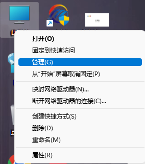
进入存储->磁盘管理，右键删除刚才清理出来的盘
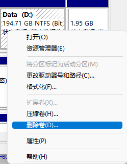
删完后会变成这样
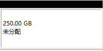
其它方法：例如用Diskgenius等工具的方法这里就不细讲，方法很多，只要能不丢失原有数据分出空闲分区即可
系统安装盘
插U盘
解压下好的Ventoy，打开
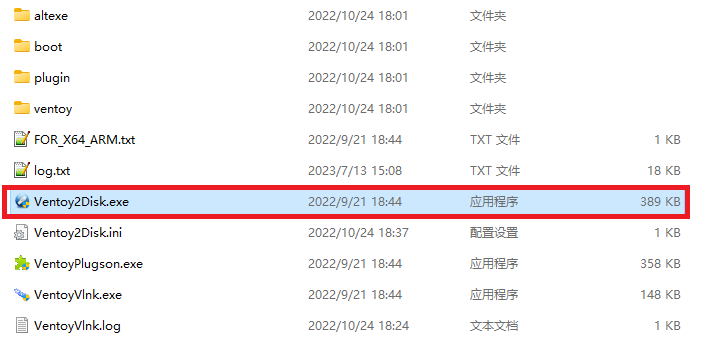
选择你的U盘，点击安装
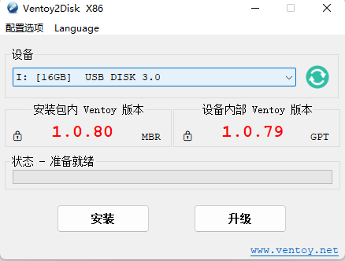
安装好后会看到电脑里有个叫 Ventoy 的盘，把下好的 Ubuntu 22.04 镜像放进去
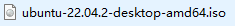
如果不是这个文件，那大概率是下错了
Ubuntu安装
重启电脑，但不要进windows
这里需要自己查询自己的电脑开机时按哪个键更改启动盘，或者进BIOS更改启动顺序
常见的有 F2 F9 F12
如果键盘上的这些键是小字，功能图标是大字，那在按的的时候要跟 Fn 一起按
然后选择带USB的那个启动（假如提示无法通过该盘启动，可能是没关安全启动，需要到BIOS里面关掉）
进入下图后回车即可
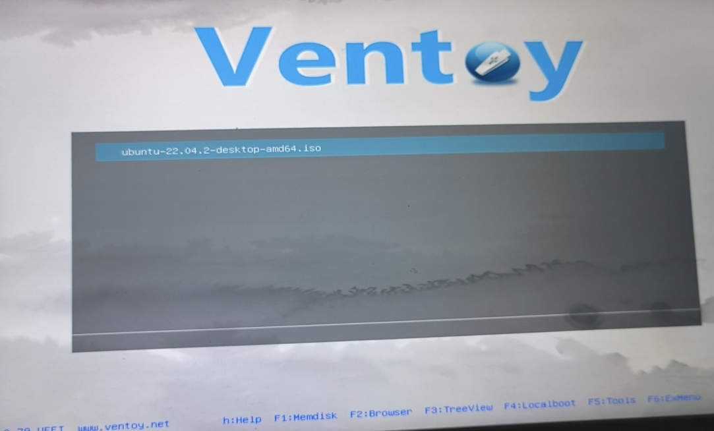
选择第一个然后回车
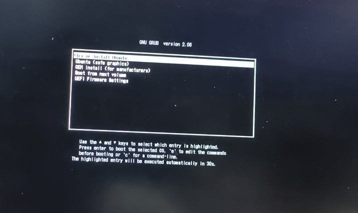
等待进入Ubuntu的安装界面
如果在这一步出现白字刷屏报错，显示Live CD启动失败及无法打开某个block则需要换个U盘做启动盘
别的错误baidu解决（
进入Ubuntu安装界面，点击Install
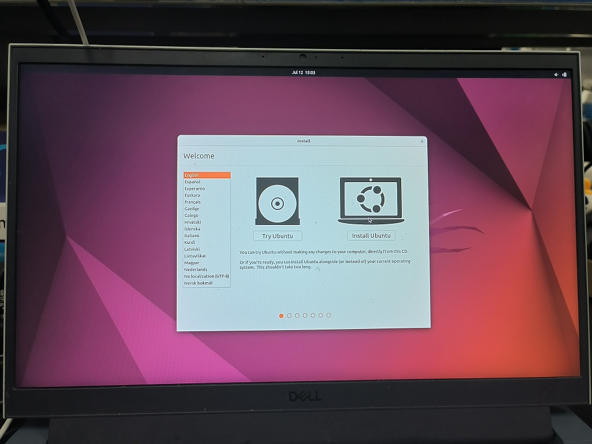
语言选English，因为中文下自动生成的中文路径在后面使用过程中容易出问题
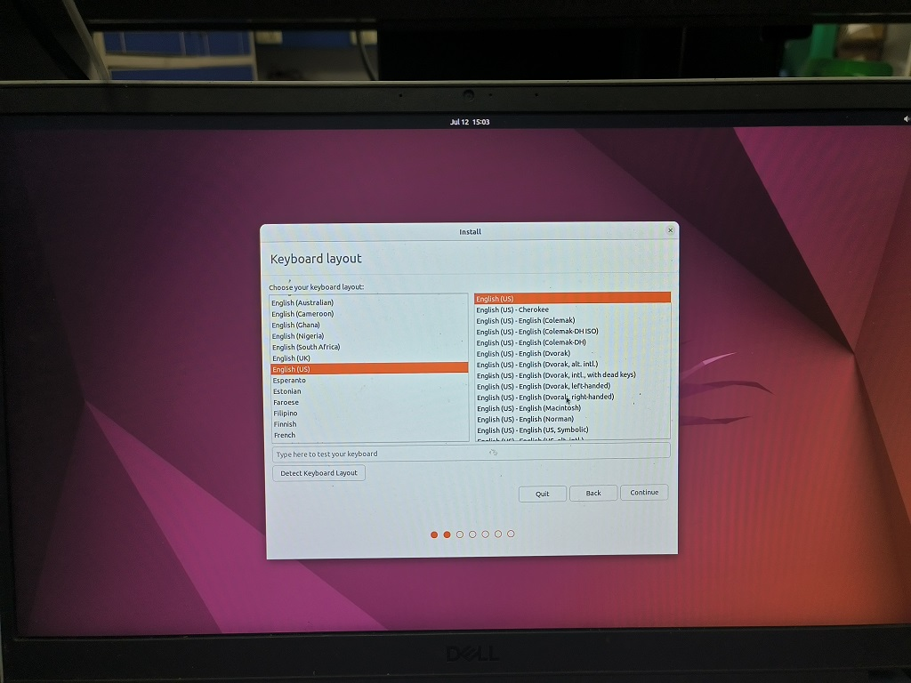
连接wifi，后面需要联网自动安装驱动（不要使用需要网页登录的wifi，如学校的，这里没法登录）
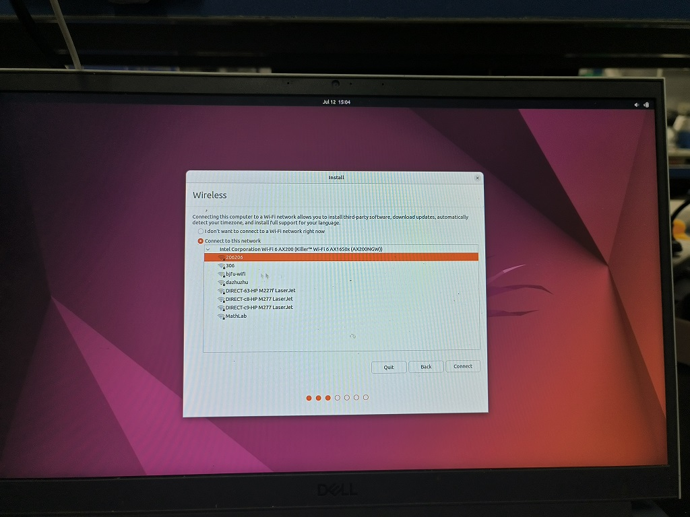
把 Install third-party 勾上，这个是自动安装驱动
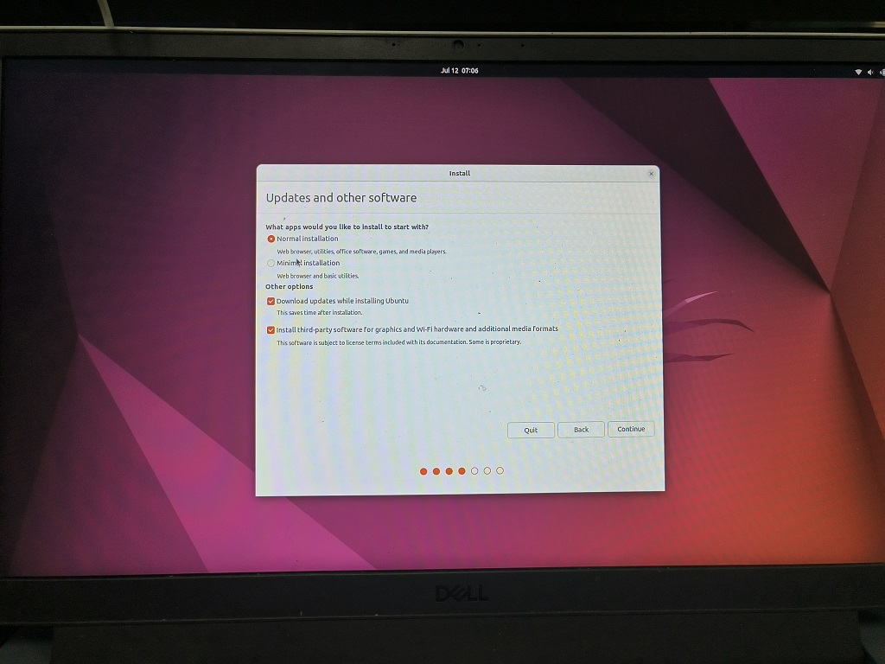
这一步很重要，别选错了，选错你的电脑数据就没了
选择 Something else
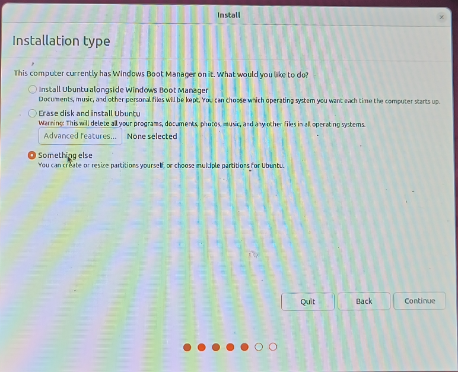
接着找到前面步骤中预留的空间（显示 free space 字样的）
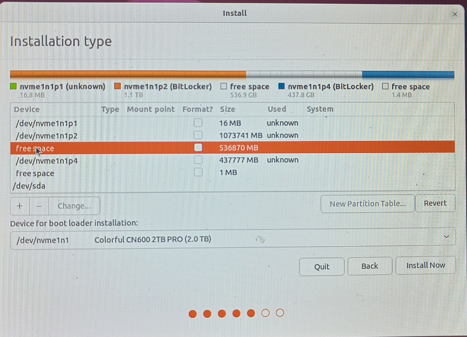
点击 +
先新建 swap 分区
空间按 16G = 16384MB 分
选择逻辑分区
下面 Use as 选择 swap area
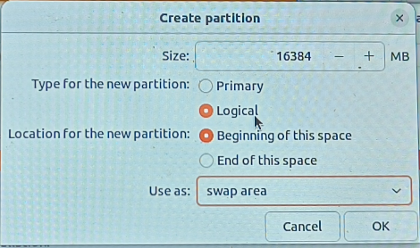
确定后再新建 boot 分区
空间分 4G=4096MB
选择逻辑分区
下面 Use as 选择 Ext4 journaling file system
Mount Point 选择 /boot
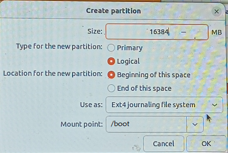
确定后再新建 / 分区
空间分 100G = 102400MB
选择逻辑分区
下面 Use as 选择 Ext4 journaling file system
Mount Point 选择 /
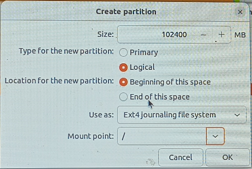
确定后再新建 /home 分区
空间按需即可，如果是前面单独分出来的空间，直接把剩下的部分都分到这个分区
如果是新盘，这个分区分100G够用了
选择主分区
下面 Use as 选择 Ext4 journaling file system
Mount Point 选择 /home
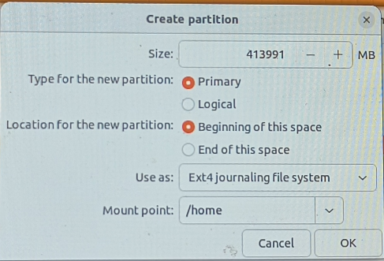
下面的 Device for boot loaderinstallation 选择 /boot 所在的 Device
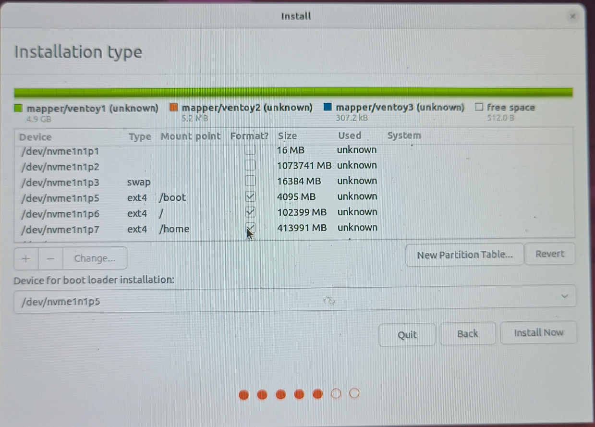
接着点 Install Now
位置选 Shang Hai，这个是用来确定时区的
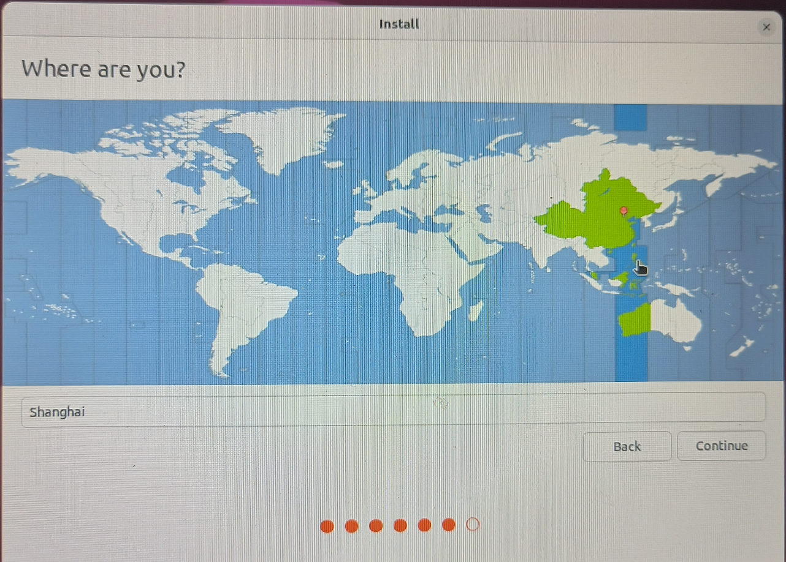
下一步要填写用户名与密码，如果不想每次登录输密码把 Log in automatically 选上
等待安装完成即可，可能比较慢，取决于网络环境
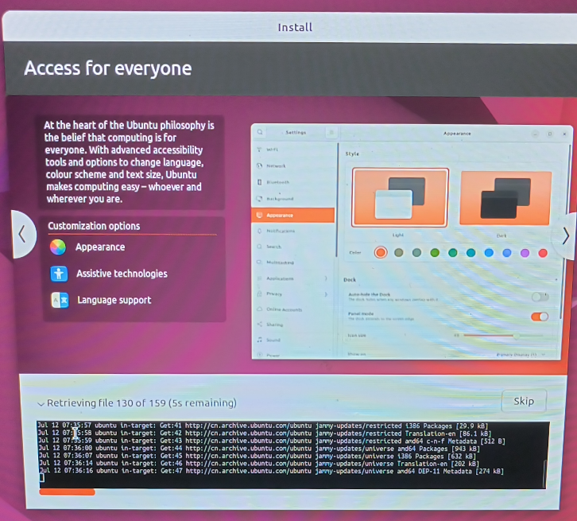
安装完成后会提示重启，后面还会提示拔U盘，拔掉U盘回车即可
如果没重启，手动开机就行
开机的时候会进去Grub界面，可以通过键盘上下键更改选择
在 Ubuntu 那一行回车进入 Ubuntu
在 Windows Boot Manager 那一行回车进入 Windows
OpenCV环境配置
进入Ubuntu，把U盘里面当时拷进去的三个包复制到桌面
先安装一些环境依赖
在桌面右键打开终端 Terminal
依次执行以下指令
1 | sudo apt-get install build-essential |
sudo 指令需要输入前面设置的密码
如果提示[Y/n]，输入 Y 回车即可
将OpenCV 4.5.5源码包解压到桌面，并把OpenCV_Contrib解压到OpenCV 4.5.5所在的文件夹内
即下图：
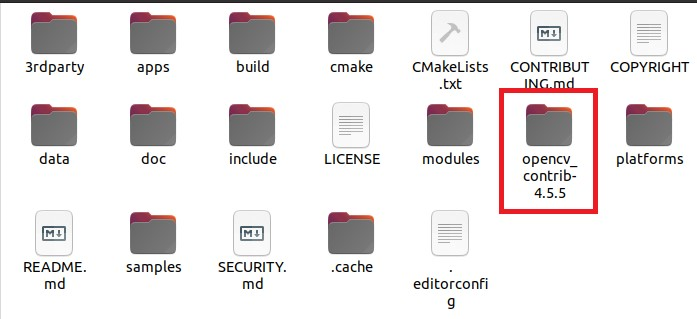
在上面这个文件夹内右键打开终端 Terminal
输入 mkdir build 新建 build 文件夹
输入 cd build 打开 build 文件夹
然后依次输入以下指令
1 | cmake .. |
其中第二个指令的执行时间较长，这是由于在编译OpenCV库
安装完成后，在终端中打开opencv-4.5.5/sample/cpp/example_cmake
新建文件夹 build，在终端打开后执行：
1 | make -j8 |
若出现 Hello OpenCV 则说明配置成功
代码编辑环境配置
把U盘里下载的 VScode 的.deb安装包放到桌面
在桌面打开终端，输入以下指令
1 | sudo dpkg -i 你的安装包名字.deb |
安装包名字可以右键安装包重命名 Rename , Ctrl + C 复制，在终端中 Ctrl + Shift + V 粘贴
安装完成后在终端输入以下指令回车执行
1 | code |
打开VScode
点击
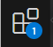
进入插件安装页面
在搜索栏上输入 Chinese 安装这个语言包
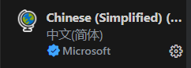
然后还要安装这四个包
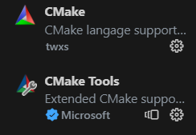
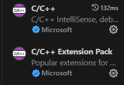
安装完即可